1925-1932
Clicca sulle monete per vedere il retro
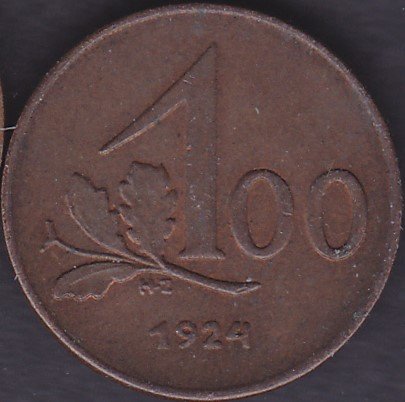
1923-1924
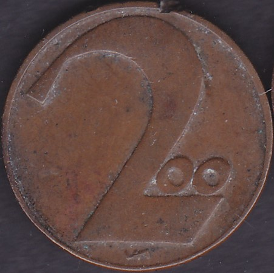
1924
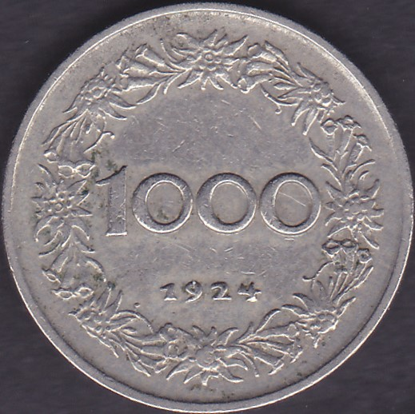
1924
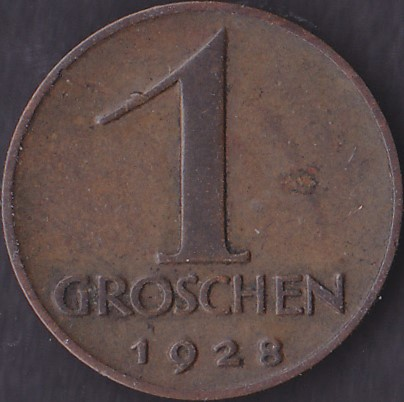
1925-1938
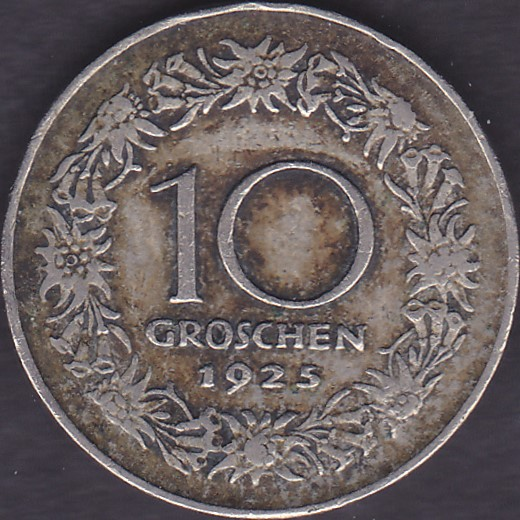
1925-1929
1925-1932
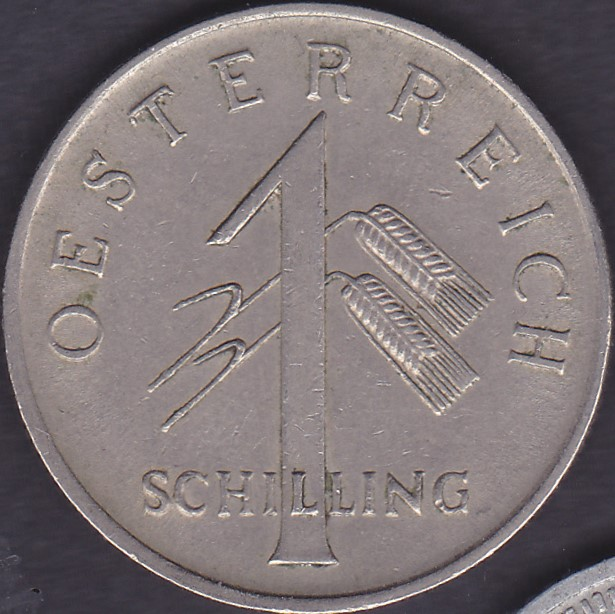
1934-1935
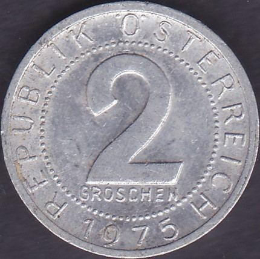
1950-1994
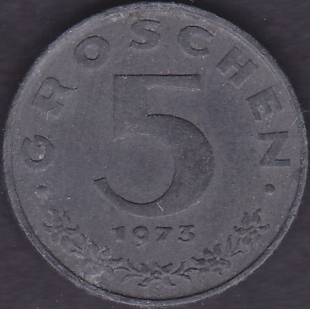
1948-1994
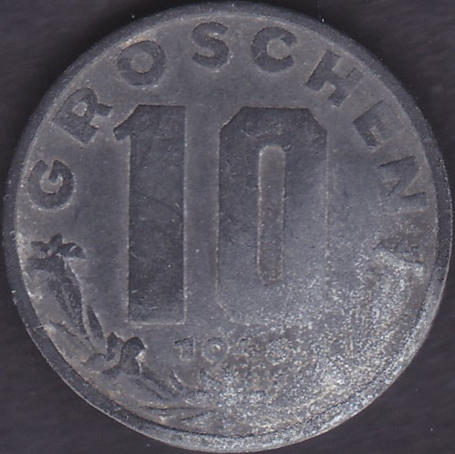
1947-1949
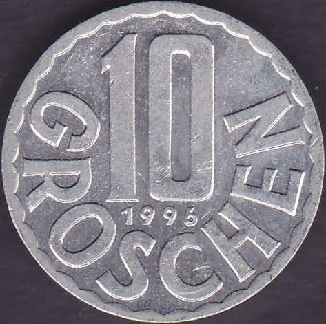
1951-2001
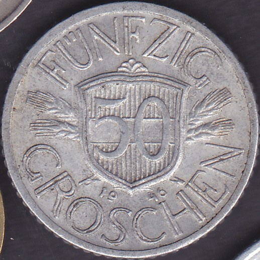
1946-1955
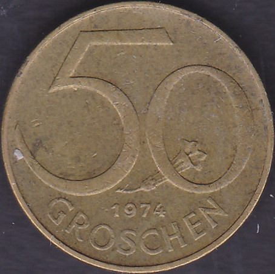
1959-2001
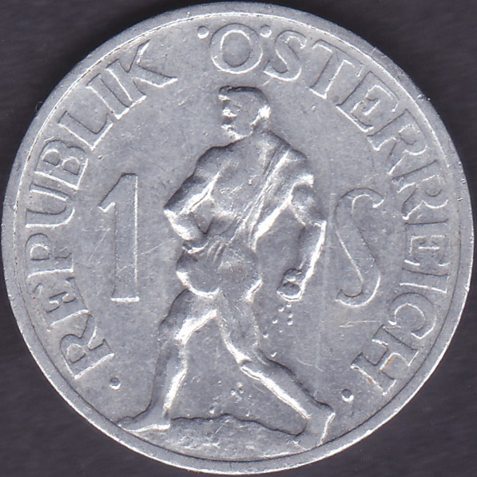
1946-1957
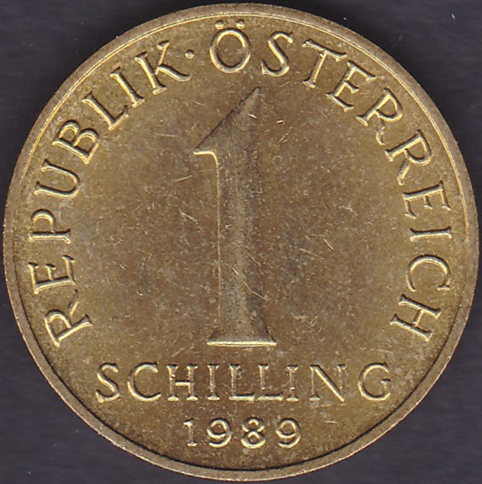
1959-2001
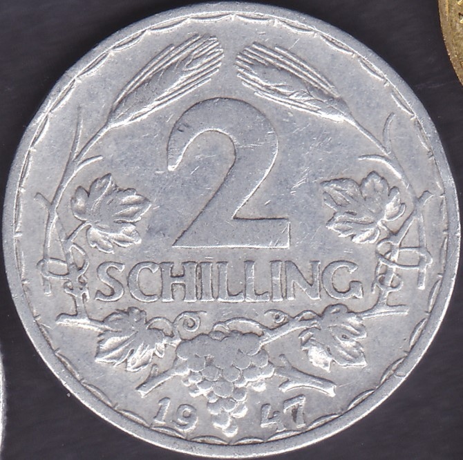
1946-1952
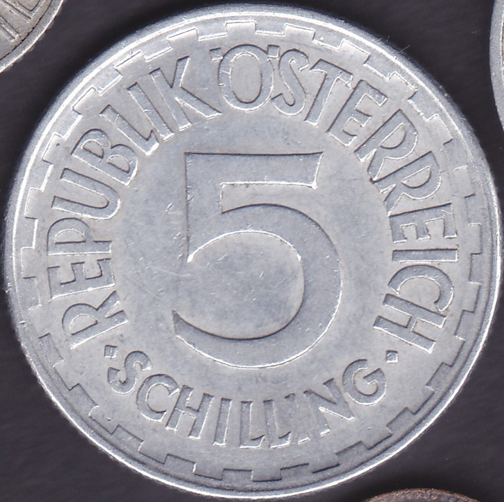
1952-1957

1960-1968Argento
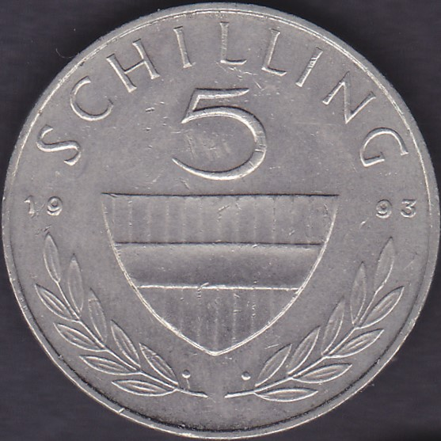
1968-2001Rame-nichel
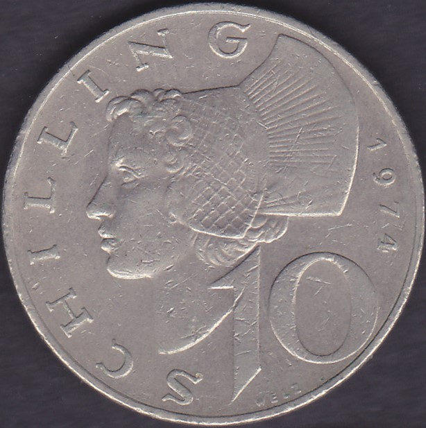
1974-2001
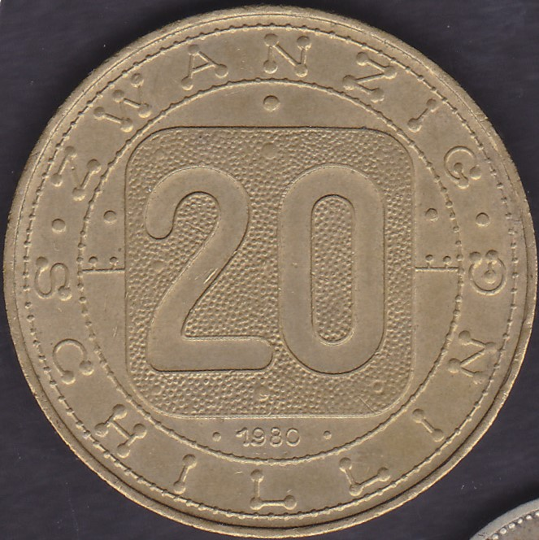
1980-1993

2002-2026

2002-2026

2002-2026

2002-2007

2008-2026

2002-2007

2008-2026

2002-2007

2008-2026

2002-2007

2008-2026

2002-2006

2008-2026

200550 anni del Trattato di Stato austriaco

200750 anni dei Trattati di Roma

200910 anni dell'Unione Economica e Monetaria

201210 anni dell'euro

201530 anni della bandiera europea

2016200 anni della Banca Nazionale austriaca

2018100 anni della Repubblica d'Austria

202235 anni del programma Erasmus